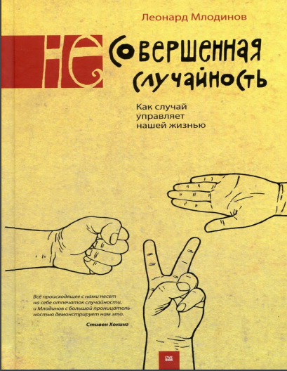

Млодинов очень увлекательно и доходчиво рассказывает о сложных математических понятиях. Очень жаль, что эта книга не попалась мне во время курса теории вероятности в универеситете. Она сто процентов заинтересует вас в высшей математике и просто без формул объяснит сложные термины из теории вероятности.
Самой полезной оказалась глава, посвященная условной вероятности. Вся книга читается на раз, я без сомнений готов перечитать ее еще раз.
На вероятность влияет тот факт, что событие произойдет, если или при условии, что произойдут другие события. В этом и заключается теорема Байеса или теория условной вероятности. Теорема Бернулли решает следующий вопрос: сколько получится орлов, если планируется произвести много бросков идеальной монеты, в то время как Байес исследовал первоначальную цель Бернулли — вопрос о том, насколько можно быть уверенным в том, что монета идеальна, если выпадает определенное число орлов. Байес разработал условную вероятность в попытке ответить на тот же вопрос, который увлек Бернулли: как по известному факту события вычислить вероятность того, что оно было вызвано данной причиной?
Представим, что ваш босс стал отвечать на ваши электронные письма с запозданием. Многие подумают, что это конец, и скоро начальник вас уволит. Подумают они это потому что: если вас собираются уволить, велика вероятность того, что босс перестанет отвечать на ваши письма оперативно. Однако босс может запаздывать с ответом и потому что просто занят. Так что вероятность того что вас скоро уволят, если начальник стал отвечать на письма с задержкой, гораздо ниже, чем вероятность того, что ваш начальник станет отвечать на письма с задержкой если вас ждет увольнение.
Своей привлекательностью многие теории заговоров обещаны неправильному пониманию вышеприведенных логических выкладок. То есть все дело в путанице: вероятность того, что ряд событий произойдет, если события эти являются результатом тайного заговора, путают с вероятностью того, что тайный заговор существует, если имеет место ряд событий.
На вероятность влияет тот факт, что событие произойдет, если и при условии, что произойдут другие события.
Представьте себе компанию людей, незнакомых друг другу. И один из них неожиданно начинает нести ерунду. Кто-то из компании в шутку говорит: — «Он, наверное, спятил.» Условная вероятность может ответить на этот вопрос. Насколько «наверное»? Какова вероятность того, что в компании сумасшедший и, что именно сейчас в данный момент он несет чушь?
Чтобы разобраться лучше, посмотрим на задаче о двух девочках.
В семье двое детей; какова вероятность того, что если один из детей — девочка, то и другой ребенок тоже девочка?
В этой задаче пространство элементарных событий изначально такое:
- (мальчик, мальчик),
- (мальчик, девочка),
- (девочка, мальчик),
- (девочка, девочка),
Однако оно сокращается до следующих параметров, так как мы уже знаем что один ребенок - девочка:
- (мальчик, девочка),
- (девочка, мальчик),
- (девочка, девочка),
Получается, что если вы узнаете, что один из детей — девочка, что шансы на семью из двух девочек составляют 1 из 3.
А теперь представьте, что Млодинов дальше утверждает:
Тот факт, что одну из девочек зовут Флорида, меняет шансы на 1 из 2.
Кажется совершенно невероятным. Видимо, в имени Флорида есть что-то особенное. Давайте разбираться. Итак, условие:
В семье двое детей; какова вероятность того, что если один из детей — девочка по имени Флорида, то и другой ребенок тоже девочка?
В этой задаче нас интересует помимо пола детей еще и имя, поскольку речь о девочках. Наше первоначальное пространство элементарных событий должно включать в себя все вероятности, поэтому список содержит и пол, и имя. Обозначим девочку по имени Флорида как «девочка Ф», а девочку по имени не Флорида как «девочка не Ф». Обозначим пространство элементарных событий:
- (мальчик, мальчик)
- (мальчик, девочка Ф.)
- (мальчик, девочка не Ф.)
- (девочка Ф., мальчик)
- (девочка не Ф., мальчик)
- (девочка не Ф., девочка Ф.)
- (девочка Ф., девочка не Ф.)
- (девочка не Ф., девочка не Ф.)
- (девочка Ф., девочка Ф.).
Теперь «урежем». Так как нам известно, что один из детей — девочка по имени Флорида, можно сократить пространство элементарных событий:
- (мальчик, девочка Ф.)
- (девочка Ф., мальчик)
- (девочка не Ф., девочка Ф.)
- (девочка Ф., девочка Ф.)
Теперь видно, чем еще эта задача отличается от задачи про двух дочерей. Поскольку утверждения, что девочку зовут Флорида и девочку зовут не Флорида, нельзя назвать равновероятными, не являются таковыми и все элементы пространства элементарных событий.
В 1935, последнем году, за который Управление социальным обеспечением предоставило статистику в отношении имени, около 1 из 30.000 девочек были наречены именем Флорида. Поскольку имя становилось все менее популярным, предположим, что сегодня вероятность появления девочки по имени Флорида равна 1 из 1 млн. Это значит следующее: если нам станет известно, что определенную из двух девочку зовут не Флорида, ничего страшного, однако если мы узнаем, что ее зовут Флорида, можно сказать, что мы попали в точку. Вероятность того, что обеих девочек назовут именем Флорида (даже если мы проигнорируем тот факт, что обычно родители избегают давать детям одинаковые имена), настолько мала, что можно спокойно ею пренебречь. Итак, вот что у нас остается:
- (мальчик, девочка Ф.)
- (девочка Ф., мальчик)
- (девочка не Ф., девочка Ф.)
- (девочка Ф., девочка не Ф.).
Все эти события в весьма хорошем приближении равновозможны.
Поскольку 2 из 4, то есть половина элементов пространства элементарных событий являются семьями с двумя девочками, ответом не может быть 1 из 3 — как это было в задаче с двумя дочерьми, — ответом является 1 из 2. Все дело в дополнительной информации — осведомленности насчет имени девочки.
Если вы по-прежнему теряетесь в догадках, то можно представить себе следующее: в очень-очень большой комнате мы собираем 75 млн семей с двумя детьми, из которых хотя бы один ребенок — девочка. Как нам стало известно из задачи с двумя дочерьми, в комнате окажется около 25 млн семей с двумя девочками и 50 млн семей с одной девочкой (25 млн семей, в которых девочка является старшим ребенком, и столько же семей, в которых девочка является младшим ребенком).
Далее «урезаем»: просим остаться в комнате только те семьи, в которых есть девочки по имени Флорида. Поскольку Флорида — 1 имя на 1 млн имен, останутся около 50 из 50 млн семей с одной девочкой. А из 25 млн семей с двумя девочками 50 тоже останутся: 25 потому, что их первый ребенок назван по имени Флорида, другие 25 потому, что их младшая дочь названа Флоридой.
В этом примере всех девочек можно представить как лотерейные билеты; в таком случае девочки по имени Флорида станут выигрышными билетами. И хотя семей, в которых один из двух детей — девочка, в два раза больше, чем семей, в которых оба ребенка — девочки, семьи с двумя девочками обладают двумя лотерейными билетами, поэтому среди выигравших будет примерно одинаковое соотношение семей с одной девочкой и семей с двумя девочками.
Следовательно, ответ 1/2. Если в семье одну девочку зовут Флорида, то вероятность, того что второй ребенок девочка - 1/2.